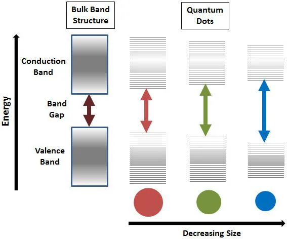
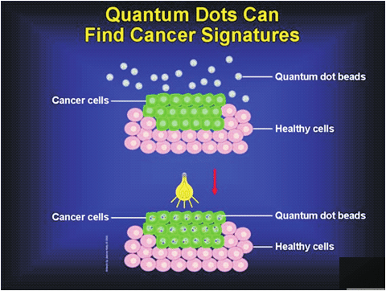

|Materials Science and Engineering |Nanotechnology | Optoelectronics |
-MARCH 17, 2023
QUAMTUM DOTS

In small molecules, electrons occupy discrete molecular orbitals, whereas in macroscale solids the electrons occupy delocalized bands. At what point does a molecule get so large that it starts behaving as though it has delocalized bands rather than localized molecular orbitals? For semiconductors, both theory and experiment tell us that the answer is roughly at 1 to 10 nm (about 10–100 atoms across). The exact number depends on the specific semiconductor material. The equations of quan- tum mechanics that were used for electrons in atoms can be applied to electrons (and holes) in semiconductors to estimate the size where materials undergo a crossover from molecular orbitals to bands. Because these effects become important at 1 to 10 nm, semi- conductor particles with diameters in this size range are called quantum dots.
One of the most spectacular effects of reducing the size of a semiconductor crystal is that the band gap changes substantially with size in the 1–10 nm range. As the particle gets smaller, the band gap gets larger, an effect observable by the naked eye. On the macro level, the semiconductor cadmium phosphide looks black because its band gap is small (Eg = 0.5eV ) and it absorbs all wavelengths of visible light. As the crystals are made smaller, the material progressively changes color until it looks white! It looks white because now no visible light is absorbed. The band gap is so large that only high energy ultraviolet light can excite electrons into the conduction band ( Eg = 3.0eV ).
Making quantum dots is most easily accomplished using chemical reactions in solutions. For example, to make CdS, you can mix Cd(NO3)2 and Na2S in water. If you do not do anything else, you will precipitate the large crystals of CdS. However, if you first add a negatively charged polymer to the water (such as polyphosphate, — (OPO2-)n— ), the Cd2+ associates with the polymer, like tiny “meatballs” in the polymer “spaghetti.” When sulfide is added, CdS particles grow, but the polymer keeps them from forming large crystals. A great deal of fine-tuning of reaction conditions is necessary to produce nanocrystals that are of uniform size and shape.

Some semiconductor devices can emit light when a voltage is applied. Another way to make semiconductors emit light is to illuminate them with light whose photons have energies larger than the energy of the band gap of the semiconductor, a process called photoluminescence. A valence-band electron absorbs a photon and is promoted to the conduction band. If the excited electron then falls back down into the hole it left in the valence band, it emits a photon having energy equal to the band gap energy. In the case of quantum dots, the band gap is tunable with the crystal size, and thus all the colors of the rainbow can be obtained from just one material.
Quantum dots are being explored for applications ranging from electronics to lasers to medical imaging because they are very bright, very stable, and small enough to be taken up by living cells even after being coated with a biocompatible surface layer.
Semiconductors do not have to be shrunk to the nanoscale in all three dimensions to show new properties. They can be laid down in relatively large two-dimensional areas on a substrate but be only a few nanometers thick to make quantum wells. Quantum wires, in which the semiconductor wire diameter is only a few nanometers but its length is very long, have also been made by various chemical routes. In both quantum wells and quantum wires, measurements along the nanoscale dimension(s) show quantum behavior, but in the long dimension, the properties seem to be just like those of the bulk material.

The unique size and composition tunable electronic property of these very small, semiconducting quantum dots make them very appealing for a variety of applications and new technologies.
Quantum dots are particularly significant for optical applications owing to their bright, pure colors along with their ability to emit rainbow of colors coupled with their high efficiencies, longer lifetimes and high extinction coefficient. Examples include LEDs and solid state lighting, displays and photovoltaics.
Being zero dimensional, quantum dots have a sharper density of states than higher-dimensional structures. Their small size also means that electrons do not have to travel as far as with larger particles, thus electronic devices can operate faster. Examples of applications taking advantage of these unique electronic properties include transistors, solar cells, ultrafast all-optical switches and logic gates, and quantum computing, among many others.
The small size of dots allow them to go anywhere in the body making them suitable for different bio-medical applications like medical imaging, biosensors, etc. At present, fluorescence based biosensors depend on organic dyes with a broad spectral width, which limits their effectiveness to a small number of colors and shorter lifetimes to tag the agents. On the other hand, quantum dots can emit the whole spectrum, are brighter and have little degradation over time thus proving them superior to traditional organic dyes used in biomedical applications.
Popular Articles

Programmable Matter
The fiction and real deal behind matter that can change its physical properties.Proposed digital material having computation, sensing, actuation, and display as continuous properties active over its whole extent.
October 30, 2023

Superconductivity
The science behind materials with zero resisitance and interesting magnetic properties that can cause levitation of materials.
March 16, 2024

Nanomaterials
Materials tend to show different properties under smaller dimensions .For example, materials that are opaque in the macroscopic domain may become transparent on the nanoscale; chemically stable materials become combustible, and electrical insulators become conductors etc.
March 17, 2024

Material formation
The emergence of materials at the beginning of time, why materials are what they are.
March 17, 2024